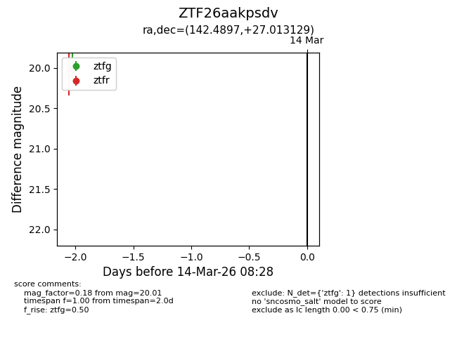
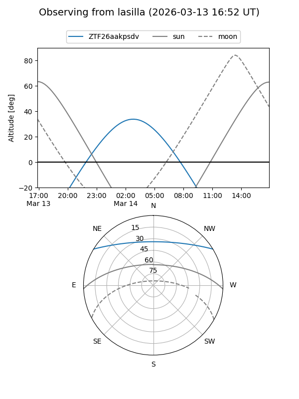
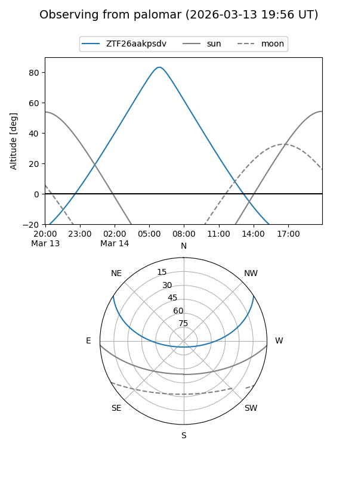

ZTF26aakpsdv
Target ZTF26aakpsdv at 2026-03-14 08:29
Aliases and brokers:
FINK: link
Lasair: link
ALeRCE: link
alt names
ZTF26aakpsdv (ztf,fink_ztf)
Coordinates:
equatorial (ra, dec) = 142.4897,+27.01313
equatorial (HMS+DMS) = 09:29:57.53,+27:00:47.26
galactic (l, b) = (200.9902,+45.46616)
Flags:
Photometry:
last ztfg=20.01
1 ztfg detections
Lightcurve

Visibility


Additional plots